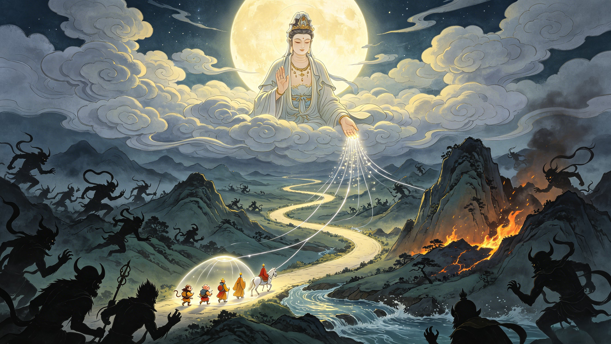

The Rescues
Every time the pilgrims were lost, she appeared. Seven rescues across the journey west — the invisible hand that wove redemption into every crisis.
Five hundred years after the Buddha pinned Sun Wukong under the mountain, Guanyin was the one who appeared. She told him his wait was almost over — a monk would come from the East, and if Wukong became his disciple, the mountain would release him. She did not just free him. She gave him purpose. The same being who had rampaged through heaven would now protect the most sacred journey in the cosmos.
Guanyin gave Tang Sanzang the golden fillet — a band that would tighten around Sun Wukong's head whenever the monk chanted a sutra. It seems cruel. But Guanyin understood that discipline and compassion are the same thing. Wukong needed boundaries. Without the fillet, he would have abandoned the journey — or killed the monk in a rage. The pain was not punishment. It was the scaffolding of redemption, holding the Monkey King together until he could hold himself.
When Guanyin found Zhu Bajie in the mountains, he was a man-eating monster — a fallen god who had become a terror to local villages. She did not destroy him. She saw the marshal he once was and the pilgrim he could become. She gave him the name "Zhu Bajie" — "Pig Who Abstains From Eight Prohibitions" — and promised that if he protected the Tang Monk, his sins would be forgiven. The goddess of mercy is also the goddess of second chances.
Sun Wukong, in a rage after being insulted by the temple's disciples, destroyed a sacred Ginseng Tree — a tree that bore fruit only once every 9,000 years. The temple master, Zhen Yuanzi, was one of the most powerful immortals in existence — and he demanded the tree be restored. Sun Wukong searched heaven and earth for a cure. Every god refused. Finally, Guanyin came. With a single sprinkle of water from her jade vase and one willow leaf, the tree returned to life — roots, branches, and all 30 ginseng fruits restored. Only Guanyin could fix what Sun Wukong had broken. She always could.
The Red Boy — a demon child of immense power — wielded the Samadhi Fire, a sacred flame so potent that not even Sun Wukong's immortal body could withstand it. The Monkey King was burned, blinded, and nearly dead. Guanyin appeared. She filled her vase with the water of an entire ocean, poured it over the mountain, and extinguished the fire. Then — in a display of her unique method — she did not destroy the Red Boy. She adopted him, placing a tightening fillet of his own around his neck and making him her attendant. Another demon transformed into a protector.
The Inspiration King — the river monster that froze Tongtian River solid and captured Tang Sanzang — was none other than Guanyin's own escaped goldfish. A pet from her lotus pond had snuck into the mortal realm and set itself up as a minor god demanding child sacrifices. When Sun Wukong came to her for help, Guanyin did not even dress fully — she appeared in morning robes, her hair undone, carrying a bamboo basket woven with lotus stems. She lowered the basket into the river. The goldfish leaped in. A crisis that nearly killed the pilgrims was resolved in a single motion by a goddess who had not yet finished her morning.
When the pilgrims finally reached the Western Paradise and received the scriptures from the Buddha himself, Guanyin was there. She had been watching every step of the 14-year journey. She reported the tally of 80 completed tribulations — one short of the required 81. The Buddha dispatched one final obstacle to complete the number. But Guanyin's presence at the end was the essential truth of her role: she was the architect, the witness, and the mother of the entire pilgrimage. Without her, there would have been no journey. There would have been no pilgrims. There would have been no scriptures. Every prayer answered on the road west traced back to one goddess who could not bear to hear the world's suffering unanswered.
Dive Deeper